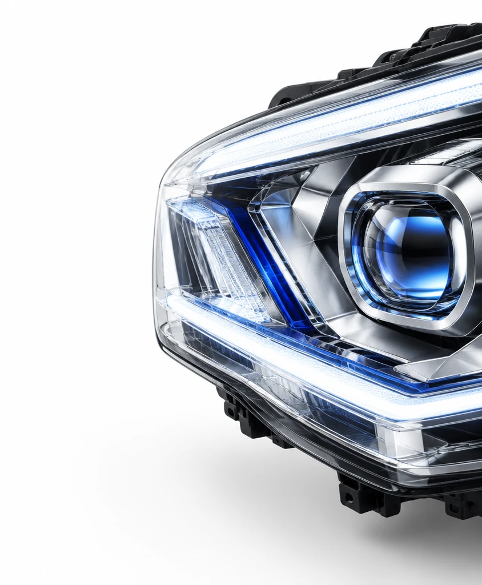
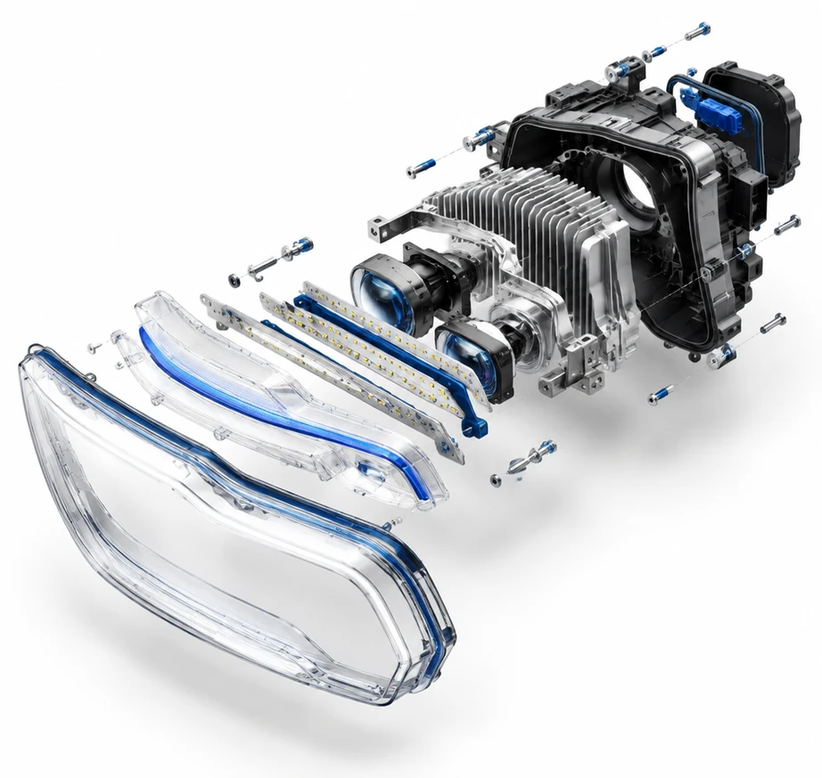
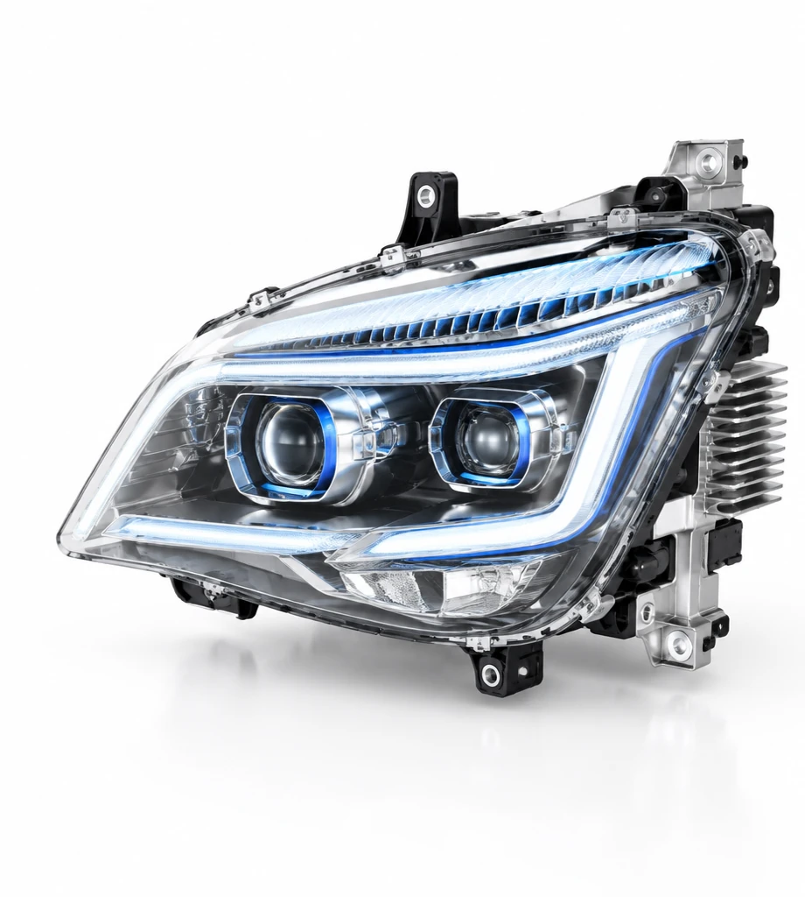

Choose one part, its requirements and how we measure success.
Show all four capabilities on that part.
Real projects with a small group of engineers.
More part families, rules and connections.

An assistant inside CATIA V5 that brings past models, requirements and simulation evidence together, so designers can make feasible decisions faster.
Disclaimer: the mounting plate, its limits and the past design cases shown in this presentation are made up for demonstration. They are not HELLA parts, data or specifications. Headlamp images are illustrative only.
Based on our first discussion and our own research.

Why did this tab move?
Was there a screw clearance problem?
“We changed it because…”
Based on public information.
Nothing on the market yet brings these three together inside CATIA V5. That is what we propose.
It is 80 × 30 × 3 mm and has two 5.5 mm holes, 40 mm apart.
It reads names and values only, and nothing is changed.
The designer asked: “Have similar mounting points caused clearance problems before?”
The record says the screw head hit a boss on the mating part.
A past case is not a rule. The engineer decides if it applies.
Option B meets every mapped requirement with the smallest change, so the assistant recommends it. Options only use approved parameters within their limits.
Checks run on the selected parts at checkpoints, so CATIA stays quick.
The vibration result VIB 04 no longer matches this design, so the assistant asks for a new analysis before review.
The AI suggests and explains. Rules and CATIA measure. The engineer decides.
Describes the part and asks.
Understands the request and explains results.
Nothing changes without approval.
Finds similar designs with their source.
Checks limits, units and tolerances.
Builds variants from approved parameters.
Tells whether results still apply.
Reads parameters, measures and updates a working copy through CATIA's official automation interface.
